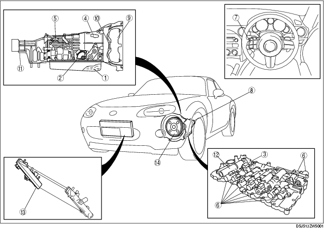

Workshop Manual ➭ TRANSMISSION/TRANSAXLE ➭ AUTOMATIC TRANSMISSION[SJ6A-EL] ➭ AUTOMATIC TRANSMISSION LOCATION INDEX [SJ6A-EL]
AUTOMATIC TRANSMISSION LOCATION INDEX [SJ6A-EL]
id051311249000

Workshop Manual ➭ TRANSMISSION/TRANSAXLE ➭ AUTOMATIC TRANSMISSION[SJ6A-EL] ➭ AUTOMATIC TRANSMISSION LOCATION INDEX [SJ6A-EL]
id051311249000
